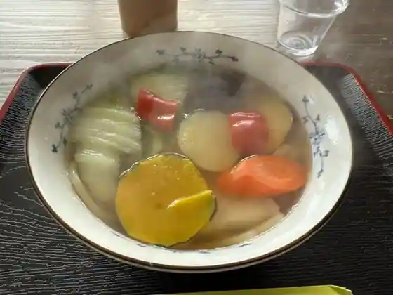
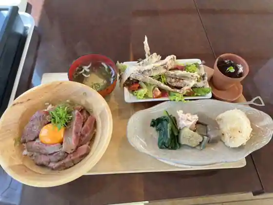
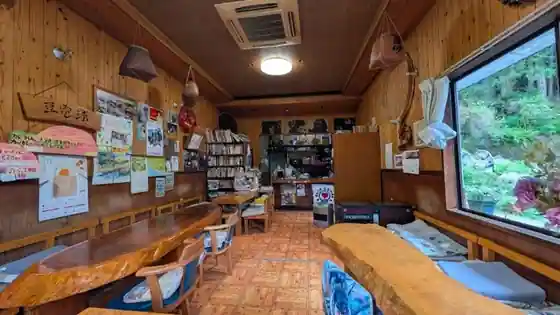
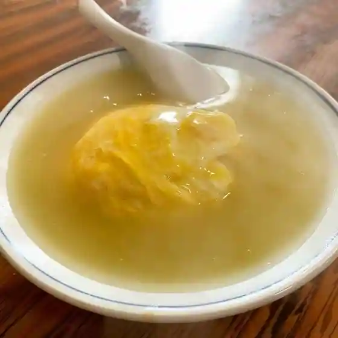
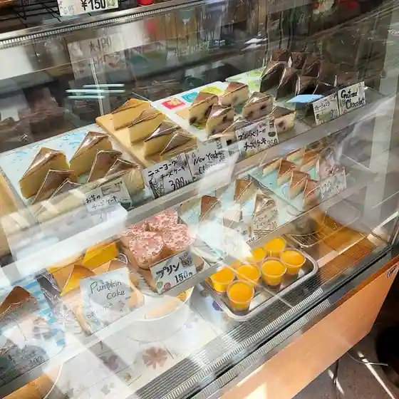

Yasuda, Kochi: things to do, food and stays
Yasuda · Kochi
Yasuda
Highlighted on the Kochi map.

Stay
いなかじかん

Inakajikan
Inn in Masahiro, Yasuda with riverside setting and one group per day.
Dining
民宿 とうの浜

Minshuku Tono Hama
味工房 じねん
Aji Kobo Jinen
ドライブイン27神峯店

Doraibuin 27 Kami Mine
望海ノ菜縁

Nozomi No Na Heri
豆でんきゅう

Mame Denkyu
萬領

Man Ryo
安田家

Yasuda Ie
Sights
Shima Ishi Pikunikku Plaza
to Hama Kyukeijo

Bessho

Yasuda Eki

to Hama Eki

Yasuda Town Hall
Dai Gei Tonneru